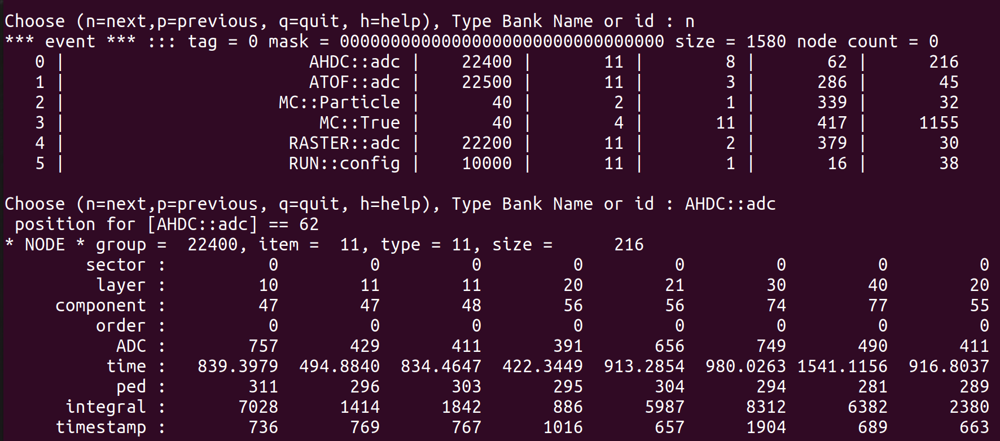

Add new entries in AHDC::adc
On the ifarm, we can see the content of an hipo file using :
hipo-utils -dump myfile.hipo
This figure shows a typical output. It displays the content of the AHDC::adc bank. In the following, we will see how to add a new entry.

Step 1
Go in /gemc/source/hitprocess/clas12/alert/ahdc_hitprcess.cc and modify the function ahdchitprocess::integrateDgtz().
map<string, double> ahdc_HitProcess::integrateDgt(MHit* aHit, int hitn) {
// starting part of the code
dgtz["hitn"] = hitn;
dgtz["sector"] = sector;
dgtz["layer"] = layer;
dgtz["component"] = component;
dgtz["ADC_order"] = 0;
dgtz["ADC_ADC"] = (int) output["max_value"]; // adc
dgtz["ADC_time"] = (float) output["t_ovr"]; // ns
dgtz["ADC_ped"] = (int) output["noise_level"]; // adc
dgtz["ADC_integral"] = (int) output["integral"]; // adc per 44 ns
dgtz["ADC_timestamp"] = (long) output["t_start"]; // ns
// MY NEW ENTRY
dgtz["ADC_newEntry"] = value_of_my_newEntry;
dgtz["TDC_order"] = 0;
dgtz["TDC_TDC"] = output["t_start"];
// remaining part of the code
return dgtz;
} // end of the funtion
Step 2
Go in gemc/source/output/hipoSchemas.cc and modify the function HipoSchema :: HipoSchema(). I add "newEntry/F" in alertAhdcchema.parse("..."). The letter "F" is the type of my new entry, it can be I, S, B, F, D, or L (there is a comment about them in the code, you can check check).
HipoSchema :: HipoSchema()
{
// starting part of the code
// detectors
alertAhdcADCchema.parse("sector/B, layer/B, component/S, order/B, ADC/I, time/F, ped/S, integral/I, timestamp/L, newEntry/F");
alertAhdcTDCchema.parse("sector/B, layer/B, component/S, order/B, TDC/I, ped/S");
alertAtofADCchema.parse("sector/B, layer/B, component/S, order/B, ADC/I, time/F, ped/S");
// remaining part of the code
}
Step 3 (can be skipped)
Nothing to do, just understanding what going on. During the simulation, there is a part dedicated to the recording of data in hipo files.
Look at gemc/source/output/hipo_output.cc
void hipo_output :: writeG4DgtIntegrated(outputContainer* output, vector<hitOutput> HO, string hitType, map<string, gBank> *banksMap) {...}
and gemc/source/output/gbank.cc
map <string, gBank> read_banks(goptions gemcOpt, map <string, string> allSystems) { ... }
Step 4
Update the database containing the bank definition. Go in gemc/detectors/clas12/alert/ahdc/bank.pl
insert_bank_variable(\%configuration, $bankname, "bankid", $bankId, "Di", "$bankname bank ID");
insert_bank_variable(\%configuration, $bankname, "sector", 1, "Di", "set to 0");
insert_bank_variable(\%configuration, $bankname, "layer", 2, "Di", "hipo layer is superlayer*10 + layer");
insert_bank_variable(\%configuration, $bankname, "component", 3, "Di", "wire number");
insert_bank_variable(\%configuration, $bankname, "ADC_order", 4, "Di", "set to 0");
insert_bank_variable(\%configuration, $bankname, "ADC_ADC", 5, "Di", "ADC integral from pulse fit");
insert_bank_variable(\%configuration, $bankname, "ADC_time" , 6, "Di", "adc time from pulse fit");
insert_bank_variable(\%configuration, $bankname, "ADC_ped" , 7, "Di", "pedestal from pulse analysis - currently set to doca");
insert_bank_variable(\%configuration, $bankname, "ADC_newEntry" , 8, "Dd", "this my new entry");
# insert_bank_variable(\%configuration, $bankname, "TDC_order", 4, "Di", "set to 0");
# insert_bank_variable(\%configuration, $bankname, "TDC_TDC", 5, "Di", "TDC integral from pulse fit");
# insert_bank_variable(\%configuration, $bankname, "TDC_ped" , 6, "Di", "pedestal from pulse analysis - currently set to doca");
insert_bank_variable(\%configuration, $bankname, "hitn", 99, "Di", "hit number");
This is the end. Now you have to go in your gemc/detectors/clas12/alert (the place where you run gemc).
cd ahdc
./ahdc.pl config.dat
cd ..
and run :
/yourpathto/gemc/source/gemc alert.gcard -OUTPUT='hipo, ten_events.hipo' -N=10 -USE_GUI=0